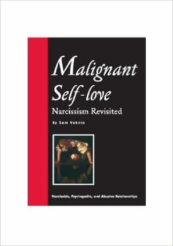

< < < Back
Why You Should Beware Of “Inverted” Narcissist Women – Return Of Kings
While much digital ink has been spilled warning men to stay away from narcissistic women, there isn’t a whole lot of literature on inverted narcissist women. Inverted narcissists (also known as inverts, covert narcissists or codependents) share many traits with overt (regular) narcissists, with the biggest difference being how they interact with others. Regular narcissists are vampires who seek to draw adulation (narcissistic supply) from other people, while inverted narcissists offer themselves as supply. In other words, regular narcissists are predators and inverted narcissists are prey.
The main reason why codependent women are so dangerous is because they outwardly possess many of the traits that neomasculine men want: they’re feminine, submissive and deferential. What separates an invert from a genuinely feminine woman is that the former doesn’t simply seek to submit to a strong man: she craves psychological (and in many cases, physical) abuse. Not only that, codependents will themselves abuse any man who isn’t narcissistic enough to satisfy their masochism.
I have extensive experience with inverted narcissist women because my personality attracts a lot of girls who lean towards codependency. Here’s how you can identify covert narcissist women and avoid them.
The Origins Of Inverted Narcissism

The term “inverted narcissism” was coined by Sam Vaknin in his book Malignant Self-Love: Narcissism Revisited. Vaknin defines the invert as someone who seeks to subsume her identity into that of a narcissist’s, a perfect fit as narcissists seek others to merge into them and provide narcissistic supply. In contrast to classic narcissists, inverts tend to be shy, emotionally sensitive, outwardly fragile, and self-deprecating.
Like classic narcissists, inverted narcissists have no self-esteem and lack a unique personality. However, while classic narcissists will construct a false reality and demand others acknowledge that reality, inverts seek to become part of a narcissist’s false reality. An invert’s existence revolves around attaching herself to a narcissist like a barnacle, constantly trying to please him and providing him with supply (which is her form of supply), until he gets bored and kicks her to the curb.
Vaknin identifies abusive, narcissistic parenting as one of the primary causes of codependency. Similarly, in her book Will I Ever Be Good Enough? Healing the Daughters of Narcissistic Mothers, Dr. Karyl McBride shows that narcissistic mothers often produce codependent daughters. Through their manipulations and antics (for example, McBride discusses one woman whose mother would seduce her boyfriends when she was a teenager), narcissistic mothers train their daughters to provide supply and sublimate their identities into theirs, preventing them from developing personalities of their own.
Inverted narcissists are incapable of sustaining relationships with non-narcissists, because they crave the drama and abuse that only a narcissist can provide. Indeed, codependent women will often act like classic narcissists when they’re in relationships with non-narcissist men, similar to how classic narcissists will take on codependent traits when their false realities are shattered. For example, Tucker Max, a self-admitted narcissist, had a nervous breakdown following the collapse of his media empire in 2008.
How To Identify Inverted Narcissist Women
Note that there are degrees of inverted narcissism, so not all inverts will display these traits in equal measure. Additionally, some of the traits of inverts overlap with other personality disorders, such as BPD.
1. They have no boundaries. Inverts love to manipulate men by being inappropriately sexual or telling them extremely private information about their personal lives. If a codependent woman gets you alone, you’ll probably be hearing TMI stories of her childhood while she tries to give you a back rub (even though you’re just friends) within ten minutes.
2. They constantly insult themselves. While overt narcissists love to talk themselves up, covert narcissists love to talk themselves down. An invert will often call herself “crazy,” “ugly,” “loser” and other put-downs, reflecting her lack of self-esteem.
3. They’re clingy to the point of becoming stalkers. An invert will never shut up about how she wants to be “married” or “meet a good man,” even as she stumbles from one failed relationship to the next. She’ll also use creepy terms that indicate her desire to subsume herself into a narcissist. Don’t be surprised if she says she wants to “give [herself] to you” or wants you to “keep [her] until [you] die,” or claims she’s suffering from “relationship withdrawal” after she gets dumped.
4. They never take responsibility for anything. Covert narcissists always blame their problems on everyone else and love inventing fantastical victim stories. When her boyfriend leaves her for another woman, it’s because he’s having a “mid-life crisis”; when she gets fired from her job, it’s because her boss is a jerk; when she cheats on her husband, it’s because she was “drunk” and “horny.” In her mind, nothing is ever her fault.
5. They’re emotionally labile and engage in splitting. Codependents don’t do nuance. One day, she’ll say you’re her “best friend” and the love of her life, and the next, she’ll say you’re an asshole who always treats her like shit. There’s no middle ground.
6. They mirror men they’re attracted to. Inverts often change their personalities and behavior to match the men they’re dating, though not to the degree that borderlines do. For example, if you drum your fingers when you’re bored or irritated, she’ll start doing it too.

7. They have high libidos and orgasm extremely easily. A disproportionate number of codependents are squirters and almost all of them orgasm easily from normal, vaginal sex. In some cases, they don’t even need or want foreplay: they’ll just get naked and sit on your cock. Much how they lack interpersonal boundaries, inverts lack sexual boundaries: you can treat them like rented mules in bed and a disproportionate number of them are bisexual.
8. They’re extremely promiscuous. Like overt narcissists, a covert narcissist will use sex as a weapon to get what she wants, whether she’s sleeping around on her boyfriend because “he won’t have sex with [her]” or blowing a drug dealer for a discount (because she’s not attractive enough to get a freebie). But it’s okay in her mind, because she’ll hang her head in shame and call herself a “giant whore” afterwards, hoping for your sympathy.
9. They lack empathy. An invert only cares about pleasing you so long as you’re narcissistically sucking her dry (and thus providing her with her form of supply). She’ll think nothing of stringing you along in a loveless relationship so long as she’s getting her jollies, and when you genuinely need her, she’ll skate off and tell you you had it coming.
10. They’re extremely passive-aggressive. If an invert is upset at you, she will almost never confront you directly. Instead, she’ll spread rumors around, bait you into getting angry at her, and publicly gaslight you. (Hilariously, she’ll accuse you of doing these same things to her.)
11. They constantly lie to themselves and others. Like borderlines, the invert has the ability to suppress and forget things that contradict her narcissistic narrative. This allows her to tell the most ridiculous lies with a straight face, an extreme version of George Costanza’s maxim, “It’s not a lie if you believe it.”
12. They’re often alcoholics or drug addicts. A codependent will often cope with the emptiness of her existence by self-medicating with booze, cigarettes or antidepressants. She may also try to get attention by making frequent suicide attempts.
Avoiding Inverted Narcissist Women
As a confident, masculine man, you’ll attract codependent women who will mistake your confidence for narcissism, and being with one is like getting hooked on a drug. What kind of man doesn’t want a girlfriend or wife who dotes on him constantly and thinks he’s the greatest guy in the world? The problem is that the kind of girl who worships the ground you walk on is also the kind of girl who will arbitrarily decide you’re the biggest piece of shit on Earth the minute your clown game isn’t perfectly on point.
While it’s possible to enthrall an inverted narcissist by adopting narcissistic traits yourself—as inverts are more like wind-up automatons than actual human beings—faking a personality disorder is untenable in the long run. A codependent woman treats her man like a nuclear reactor, inserting and removing control rods to get him to act the way she wants. Being with one is like being strapped to a roller coaster in which you’re constantly getting splattered with other peoples’ vomit.
At the end of the day, trying to heal an inverted narcissist woman is like trying to keep a skunk from smelling bad. Inverts inexorably crave narcissists; they’re incapable of dealing with men who aren’t trying to use them. If you meet one, run away from her and don’t look back.
Read More: Beware The Coming Breed of “Pro-Male” Women